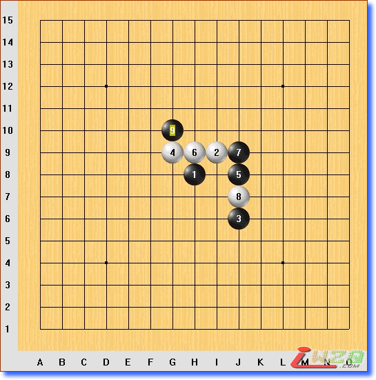

流星一黑9必败终结谱(逆刃)
#1 流星一黑9必败终结谱(逆刃) 作者：逆刃 发表时间：2007-7-5 22:56:14
以前没认真学习过流星,偶尔看到一局这个黑9的棋,突然感觉这个黑9会输,上网看了看没有这个谱的资料,自己手头有的也不多.关于这个局面有两个12都很强,到底哪个是必胜并不知道,花了不少工夫终于完成了,另一个12到后面21以后好象能被防住.因为手上没有最强的软件,黑棋有些没作用的冲四就省略了,后面简单的VCT也省略了一些.如果有疏漏还请指正!

#2 Re:流星一黑9必败终结谱(逆刃) 作者：屏蔽 发表时间：2007-7-7 13:48:34
收到，谢了。以前简单搞过黑9防在K6的，大概也是白胜，不过比较有意思。
支持一下逆刃。：）
#3 Re:流星一黑9必败终结谱(逆刃) 作者：游戏人间 发表时间：2007-7-8 0:02:56
 无聊的帮你弄个地毯~
无聊的帮你弄个地毯~ 流星黑９必败（逆刃原创）.rar
流星黑９必败（逆刃原创）.rar
#4 Re:流星一黑9必败终结谱(逆刃) 作者：黄药师 发表时间：2007-7-8 13:11:21
地毯谱，我喜欢！#5 Re:流星一黑9必败终结谱(逆刃) 作者：行云流水 发表时间：2007-7-9 12:15:26
辛苦.学习拉.呵呵